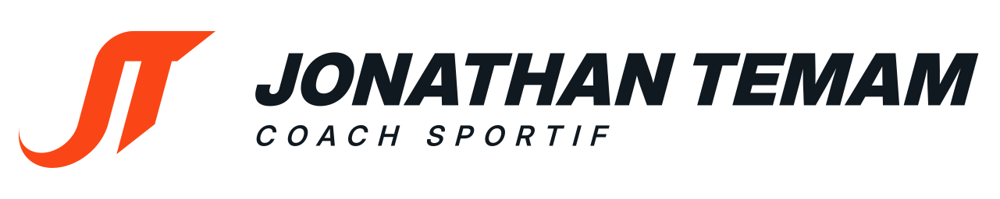
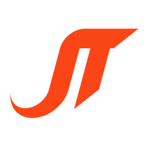
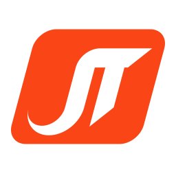

Guide du logo · v1
L'idée. Le haut du J s'arrondit et devient une seule lame qui forme la barre du T. Le crochet du J s'effile comme une traînée de vitesse. Le signe est incliné à 15° et ses pointes sont coupées à 45°, comme un départ de sprint.
1 · Versions


2 · Zone de protection et tailles minimales
| Version | Écran | Impression |
|---|---|---|
| Horizontale | 240 px de large | 50 mm |
| Empilée | 200 px de large | 45 mm |
| Symbole / écusson | 32 px (16 px avec la version petite taille) | 6 mm |
En dessous de ces largeurs, la mention « COACH SPORTIF » devient illisible : utilisez le symbole seul. Pour le favicon et les icônes, utilisez la version petite taille (pointe du crochet plus épaisse), déjà intégrée aux fichiers web/.
3 · Couleurs
CMJN 0 82 96 0 · Pantone 172 C
CMJN 75 60 45 90 · Pantone Black 6 C
Fond principal, version en négatif
Contrastes : Noir Carbone sur blanc 17,9:1 · orange sur Noir Carbone 5,1:1 · orange sur blanc 3,5:1 (suffisant pour le symbole, pas pour du petit texte). Les références CMJN et Pantone sont les teintes les plus proches : validez-les sur une épreuve chez l'imprimeur.
4 · Fonds autorisés


5 · Typographie
Nom : Inter Display Black, incliné à 15° comme le symbole et converti en tracés (ne pas le retaper). Mention : Inter Display SemiBold, capitales espacées. Textes courants : Inter (Regular, SemiBold). Inter est sous licence SIL Open Font License : utilisation libre, y compris dans un logo.
6 · À ne pas faire
- Ne pas déplacer ni redimensionner séparément le symbole et le nom dans une version avec le nom.
- Sur une photo, posez le logo sur une zone calme, ou utilisez l'écusson.